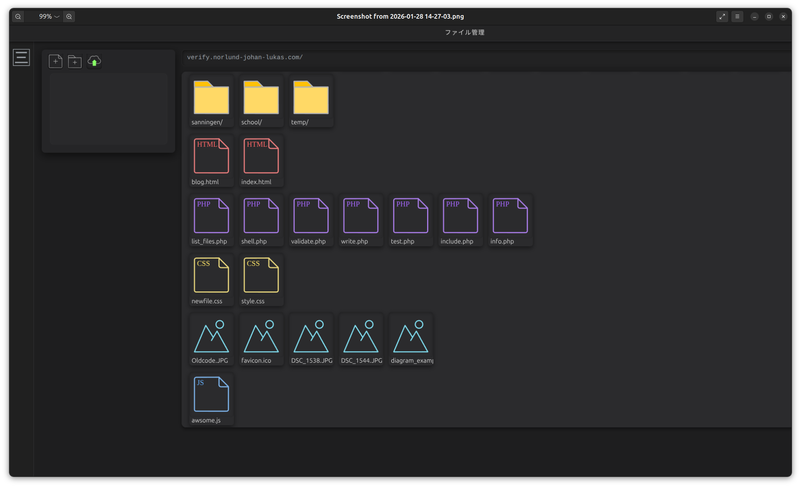

■ マルチユーザー対応設計
各ユーザーは完全に分離された環境を持ちます：
/home/lukas/users/{username}/
├── static/ Web公開ファイル
├── blog/ ブログ記事
└── php.ini ユーザー専用PHP設定
├── static/ Web公開ファイル
├── blog/ ブログ記事
└── php.ini ユーザー専用PHP設定
ドメイン名による自動ルーティング
他ユーザーのファイルには一切アクセス不可
■ 発表用トークポイント
✔ 一般的なレンタルサーバーと同等の操作感を目指しました
✔ FTP不要で、すべてWeb上で完結します
■ Webベースのファイル管理
ブラウザ上ですべて操作可能：
- ✔ ファイル一覧表示
- ✔ ドラッグ＆ドロップアップロード
- ✔ フォルダ構造アップロード対応
- ✔ 作成／削除／移動／リネーム
- ✔ HTML・CSS・JS・PHPの直接編集
- ✔ ページ再読み込みなし（非同期処理）
